Reposition PMI text, lines, and arrows
You can manipulate the terminators, text, and lines on PMI elements using edit handles and dimension edit cursors. For more information about the handles and to see examples, see the help topic, PMI edit handles and cursors.
Move PMI dimension terminators
To reposition dimension terminators inside or outside projection lines, do either of the following:
-
Point to a terminator to display the terminator cursor
 , and then drag the terminator outside the projection line.
, and then drag the terminator outside the projection line. The other terminator follows the first.
-
Click a dimension to display its handles, and then click the terminator handle.
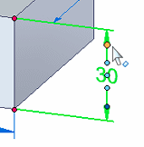
From the dimension formatting menu, select the Flip Terminators command.
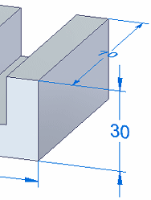
Change the length of a PMI dimension line
You can use the dimension line edit handles to change the length of selected dimension lines.
-
Click a dimension to display its handles.
-
Click+drag one of the dimension line edit handles until it is the length you want. Repeat with the dimension line edit handle on the other side of the dimension text.
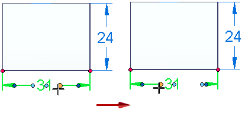
-
Click in space to update the dimension.

Hide dimension lines and projection lines
You can display a half dimension by hiding the projection line and the dimension line.
-
Click the terminator handle at the end of the dimension line that you want to hide.
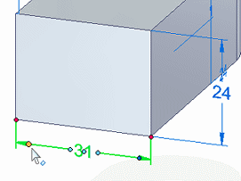
-
On the dimension formatting menu, do the following:
-
Clear the Show Projection Line check mark.
-
Clear the Show Dimension Line check mark.
-
-
Click in free space to update the dimension.
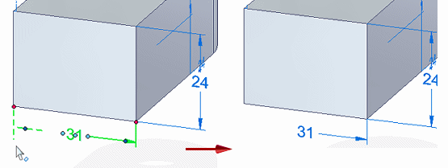
Change the length of the dimension projection lines
You can use the dimension projection line edit handles to change the length of the projection lines.
-
Click a dimension to display its handles.
-
Click+drag one of the projection line edit handles, until it is the length you want.

The red dashed lines that appear indicate the dimension connection point.
-
Repeat with the projection line edit handle on the other side of the dimension.
-
Click in space to update the dimension lines.
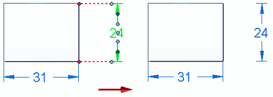
To change the projection line length for an ISO dimension, click+drag the connection handle, which is located at the point where the projection line touches the geometry. Doing so exposes the light blue projection line edit handle.
Move PMI dimension text
You can pull dimension text off of the dimension line, and you can move the text along the dimension line.
To pull dimension text off of the dimension line
-
-
Point to the dimension text to display the value edit cursor
 .
. -
Press Alt while you drag the dimension text.
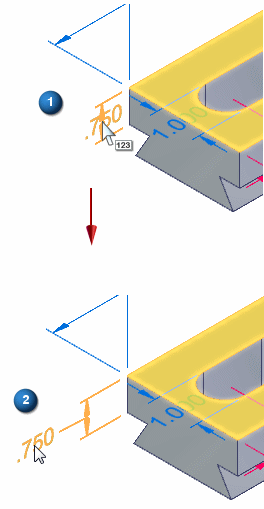
-
To reposition dimension text along the dimension line:
-
-
Click the dimension to display its handles.
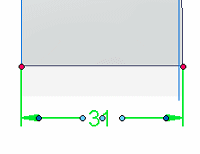
-
Click+drag the edit handle at the center of the dimension text, and drag it outside either projection line.
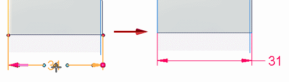
-
Move PMI in the current plane
You can move a dimension or annotation within the current plane by dragging it.
To move PMI elements in 3D space, use the Move Dimension command. To learn how to do this, see Move PMI elements in 3D.
-
To move a PMI dimension:
-
Point to a dimension line, and then click+drag it.
This also lengthens or shortens the dimension projection lines.
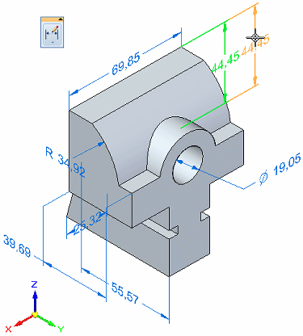
-
-
To move an annotation:
-
Select the annotation to display its edit handles.
Example:Edit handles for a callout:
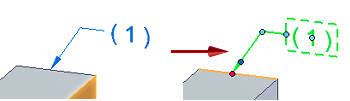
-
Click+drag an edit handle.
You get different results depending on what part of the annotation you drag, as shown in the following examples.
Example:-
Dragging the break line edit handle:
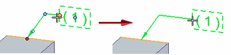
-
Dragging the connection handle:
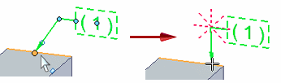
-
Dragging the leader line edit handle:
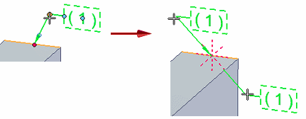
-
Dragging the move handle:
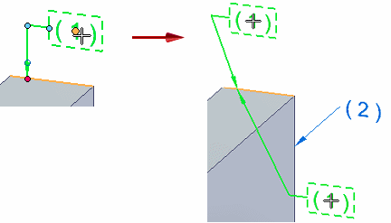
-
-
To move an annotation along the element to which it is connected, click+drag the leader line, not the leader line edit handle.
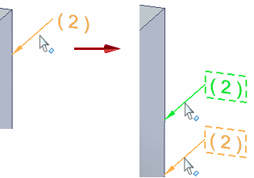
-
How do I
Display and edit PMI elementsAdd PMI dimensions and annotations
Select multiple reference elements
Create PMI dimensions from the assembly level
Place a PMI dimension using an intersection point
Set a PMI dimension and annotation plane
Show custom occurrence properties in PMI
Move PMI elements in 3D
Copy PMI elements from a sketch or feature
Add or remove PMI elements in a model view
Learn more
PMI dimensions and annotationsPMI edit handles and cursors
Placing PMI dimensions using intersection points
Look up more details
Lock Plane commandLock Dimension Plane command bar
Move Dimension command
Add To Model View command
Remove From Model View command